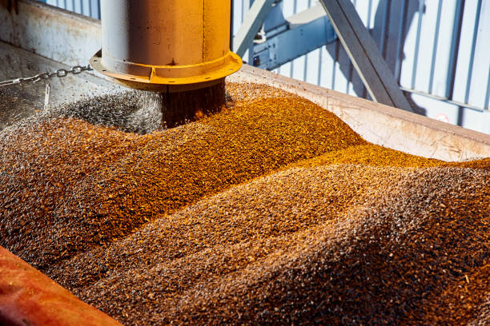

September 2026
How digital technology is changing modern agriculture
Explore the role of digital tools in improving agricultural operations and decision-making.

Explore insights, case studies, reports and practical knowledge shaping the future of digital agriculture.
Agriculture is changing rapidly. Our resource centre brings together practical ideas, digital agriculture insights and real-world experiences to help organisations make smarter decisions.
Practical knowledge and ideas for a more connected agricultural future.
Explore the role of digital tools in improving agricultural operations and decision-making.
See how digital records can improve visibility, coordination and access to reliable farmer information.

Understand the technologies helping organisations build more efficient and connected agricultural systems.

Reliable data gives agricultural organisations better visibility across their operations.

Discover how technology can support better visibility across seed production operations.
Watch our latest discussion on technology, data and opportunities in African agriculture.